Goal
Design and manufacture 50 yoyo's by the end of the semester with a press fitted ring and body, at least 2 IM molds, and at least 1 thermoformed part.
selected project
Design & manufacturing — A playful product design project developed through hands-on manufacturing and refinement.
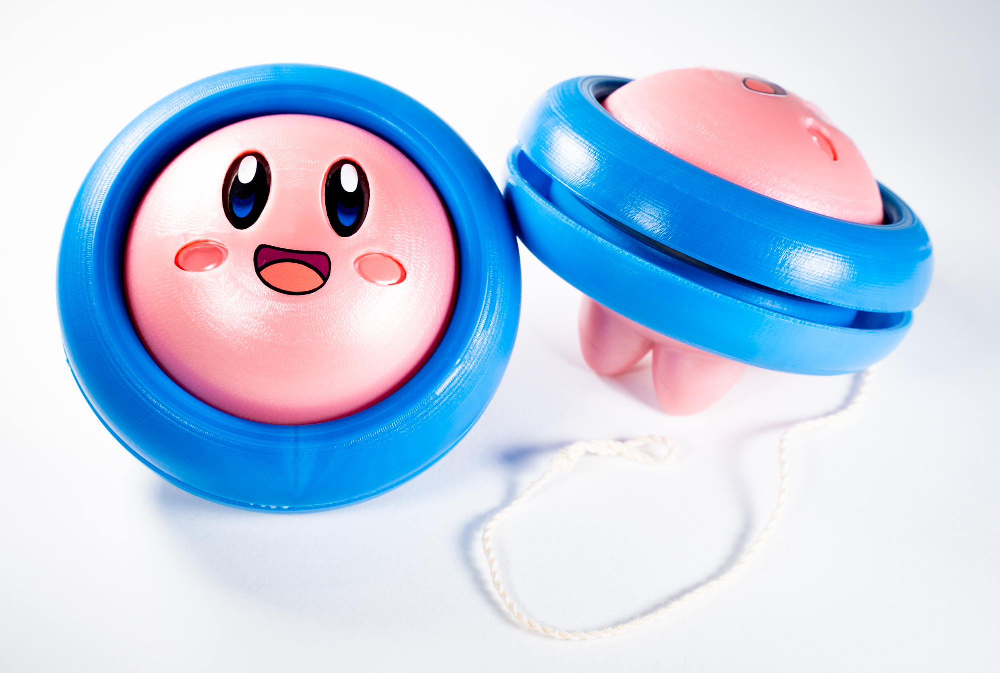
Design and manufacture 50 yoyo's by the end of the semester with a press fitted ring and body, at least 2 IM molds, and at least 1 thermoformed part.
Our design is based on the gif of Kirby floating his floatie.
A design that cuts the floatie in half horizontally to produce the ring of the yoyo. We then had to design the face and lower body of Kirby to press fit into the rings.
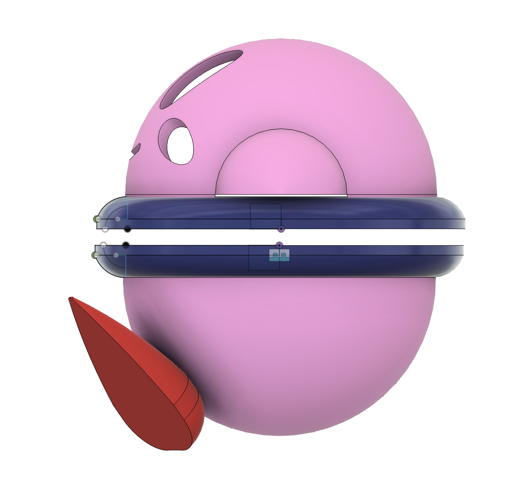
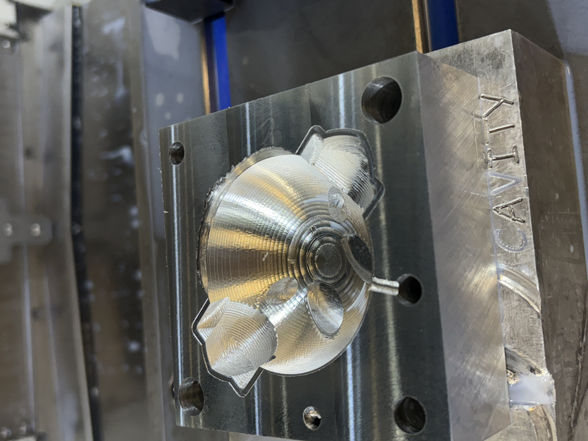
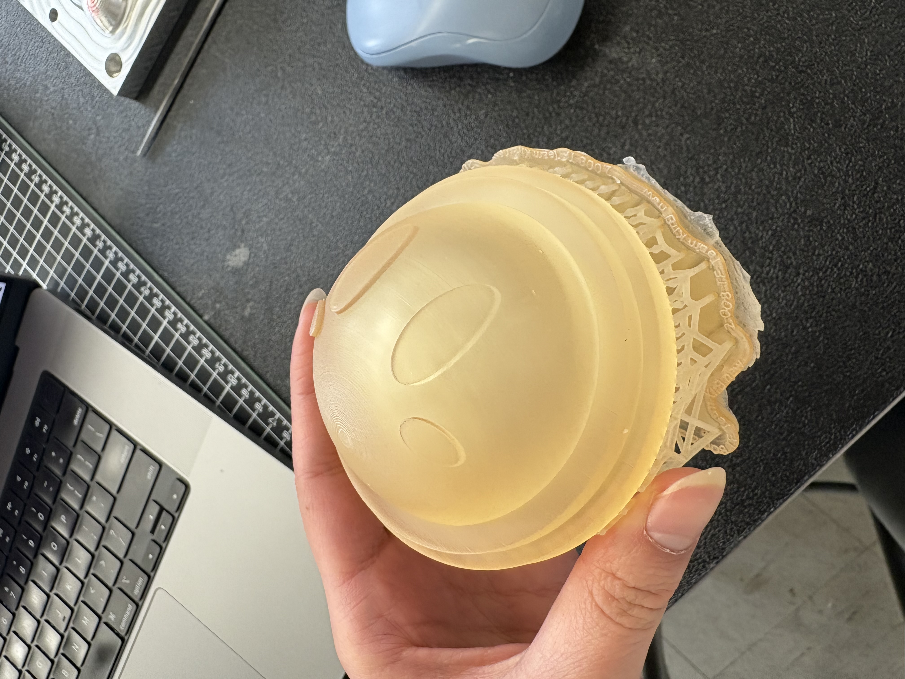
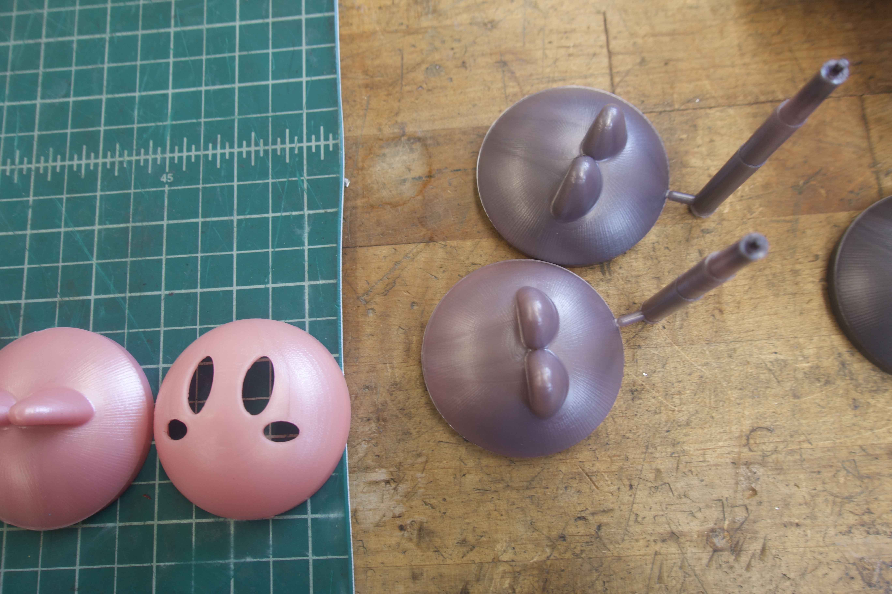
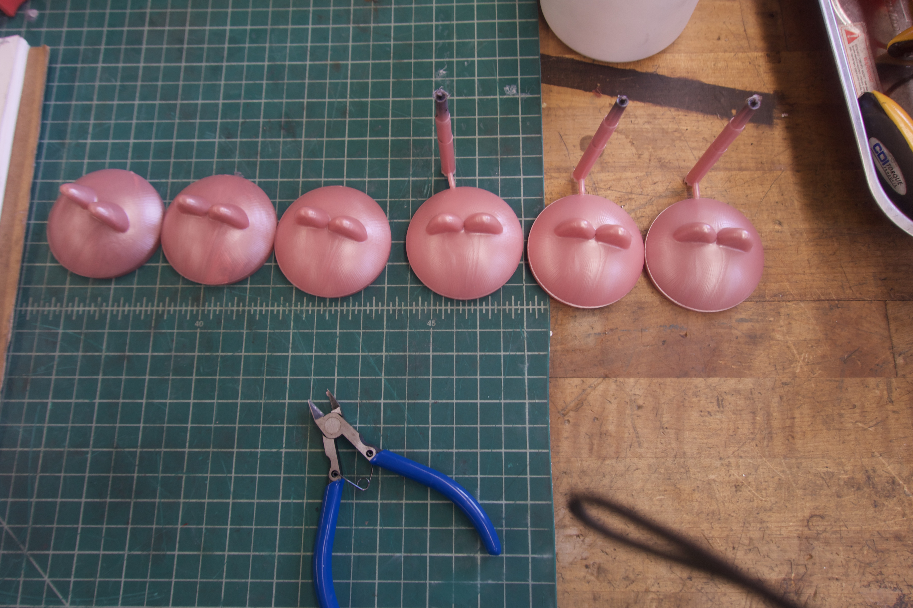
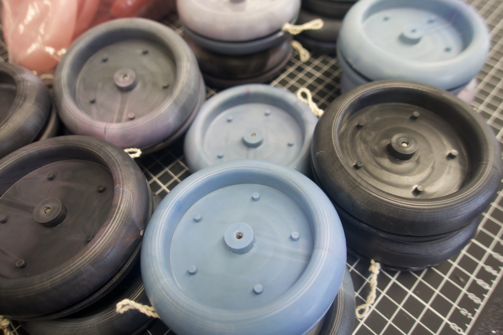
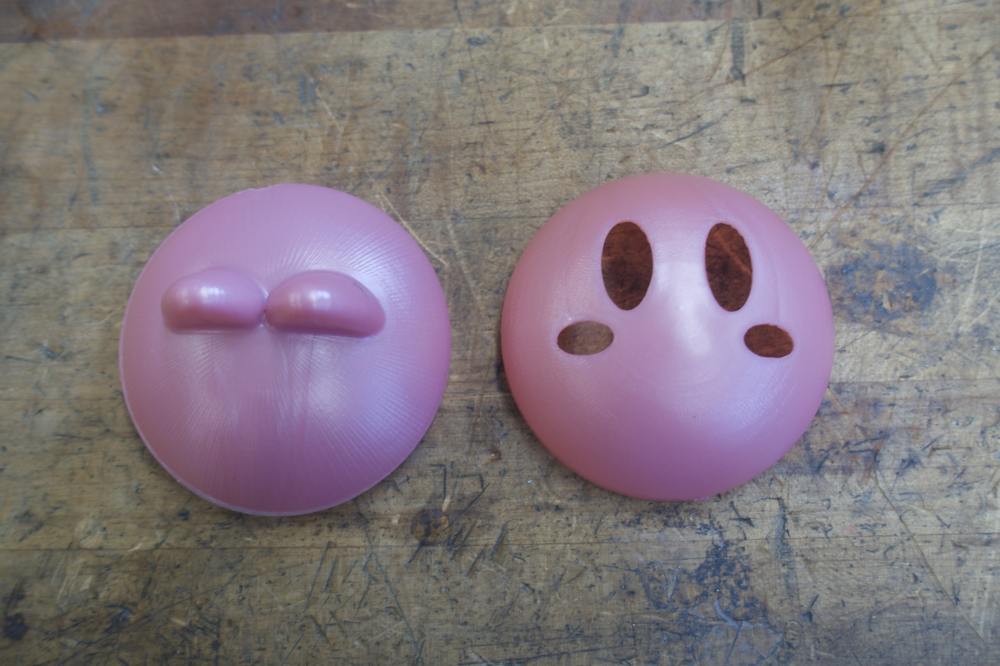
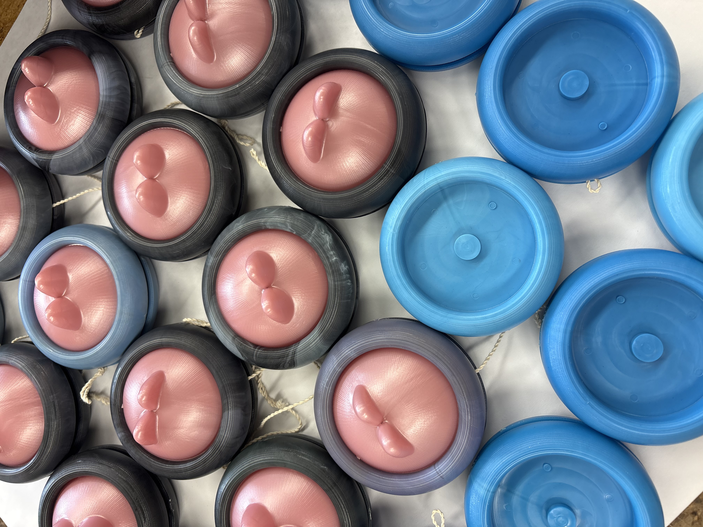
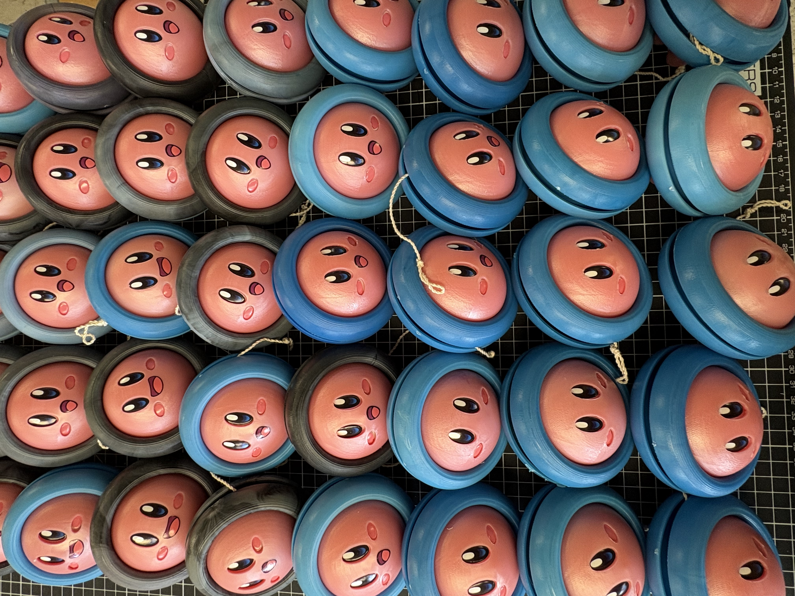
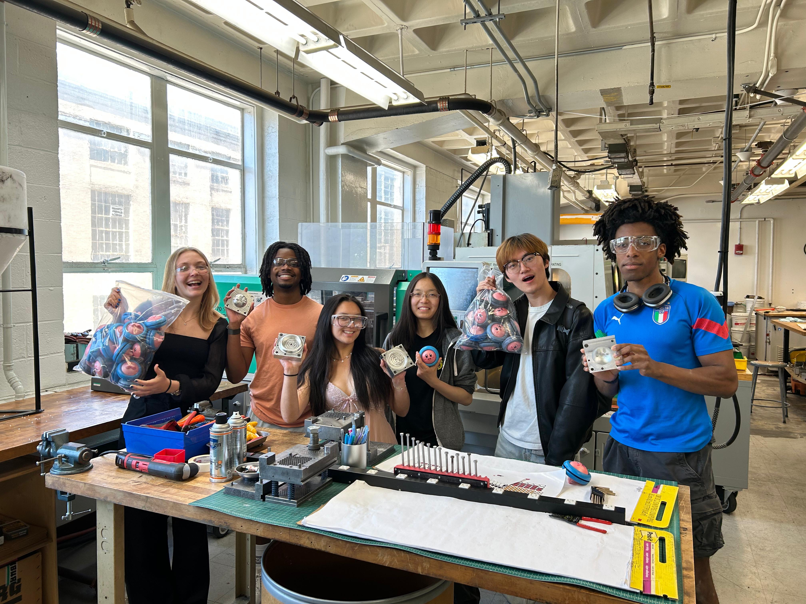
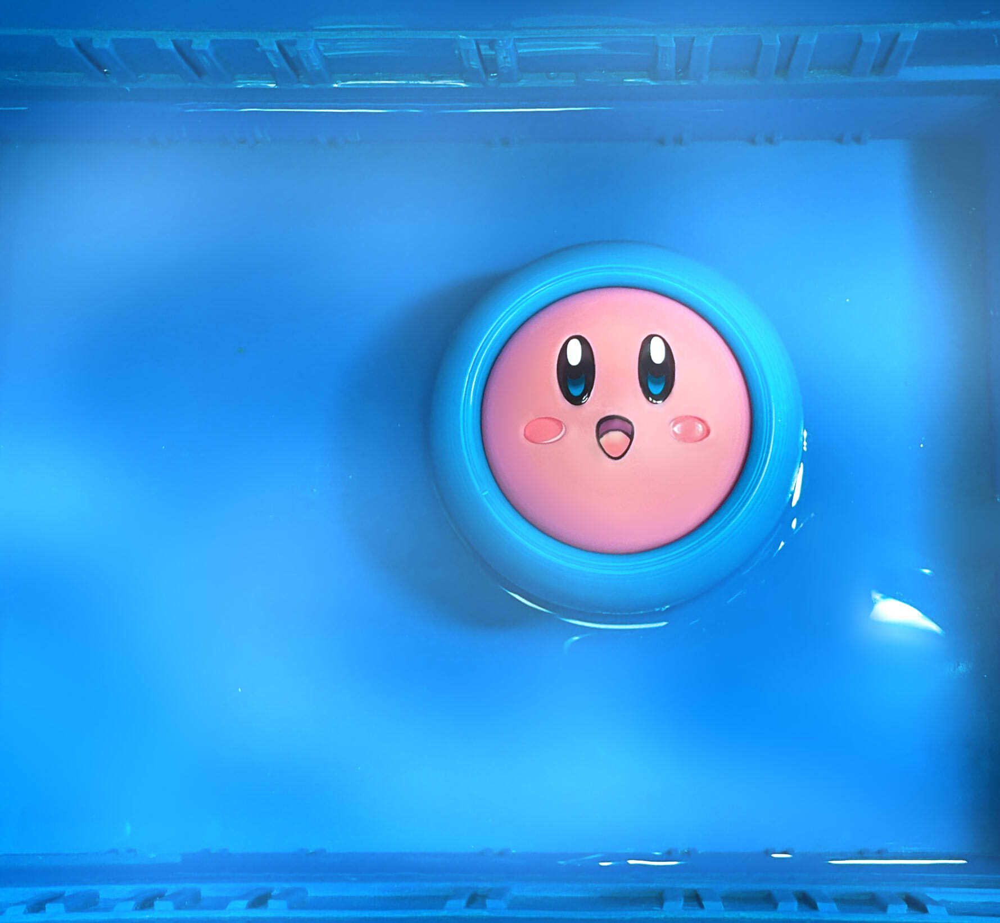
I loved this class so much. It was definitely an interesting exercise in design and how to think of it in a way that can scale up and what each machine is capable of. I learned how to CNC, how to thermoform, and how to injection mold. I loved this class so much that I came back to be a lab assistant. I learned how to use the resin 3D printers, and helped out the next class's students with whatever they needed.
← Return to My Projects